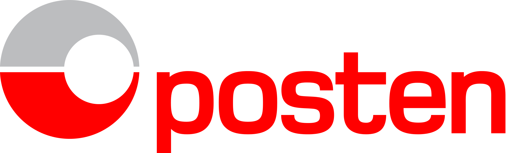

En gammel manns bekjennelser
20.12.2017
16:00
Hvordan?
Produktfokus gir gode team.
Du har alltid et mandat.
Fiks én ting av gangen
Du vinner ikke diskusjonen.
Folk er folk.
Vær genuin.
Du tåler å ha det litt vondt.
❤️❤️ 👇 ❤️❤️

❤️❤️ 👆 ❤️❤️